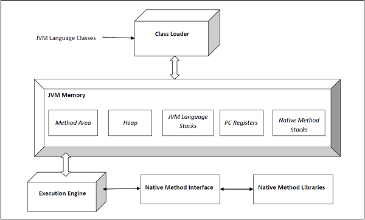

<!doctype html>
<html lang="en"></html>

<head>
  <meta charset="utf-8">
  <meta name="viewport" content="width=device-width, initial-scale=1, shrink-to-fit=no">

  <link rel="stylesheet" href="https://sadiposeidon.github.io/css/bootstrap.min.css">
  <link rel="stylesheet" href="https://sadiposeidon.github.io/css/main.css">
  <script src="https://sadiposeidon.github.io/js/main.js"></script>

  <title></title>
</head>

<body onload="includeHTML()">

<div w3-include-html="https://sadiposeidon.github.io/menu_mobile.html"></div> 

<div class="container m-2">
<div class="row">

<div class="col-md-3 d-none d-md-block">
    <div w3-include-html="https://sadiposeidon.github.io/menu_desktop.html"></div> 
</div>
<div class="col-md-9 col-12">

<div class="background-text" id="background-text"></div>

<h1>JVM (Java Sanal Makinesi) Mimarisi</h1>
<h2>JVM (Java Sanal Makinesi) nedir?</h2>
JVM (<strong>Java Sanal Makinesi</strong>), kendi ISA'sına, belleğine, yığınına, yığınına vb. sahip soyut bir bilgisayar olan sanal bir makinedir. Ana işletim sistemi üzerinde çalışır ve kaynak taleplerini ona yerleştirir.
<br><br>
JVM (<strong>Java Virtual Machine</strong>) bir spesifikasyondur ve spesifikasyonlara uydukları sürece farklı uygulamalara sahip olabilir. Teknik özellikler <strong>docs.oracle.com</strong> bağlantısında bulunabilir.
<br><br>
Oracle'ın kendi JVM uygulaması vardır (HotSpot JVM olarak adlandırılır), IBM'in de kendine ait (örneğin J9 JVM).
<br><br>
Spesifikasyonda tanımlanan işlemler aşağıda verilmiştir (kaynak – Oracle JVM Specs)
<br><br>
Dosya formatı 'class' (The 'class' file format)
<br><br>
Veri tipleri (Data types)
<br><br>
İlkel türler ve değerler (Primitive types and values)
<br><br>
Referans türleri ve değerleri (Reference types and values)
<br><br>
Çalışma zamanı veri alanları (Run-time data areas)
<br><br>
Çerçeveler (Frames)
<br><br>
Nesnelerin temsili (Representation of objects)
<br><br>
Kayan nokta aritmetiği (Floating-point arithmetic)
<br><br>
Özel yöntemler (Special methods)
<br><br>
İstisnalar (Exceptions)
<br><br>
Talimat seti özeti (Instruction set summary)
<br><br>
Sınıf kitaplıkları (Class libraries)
<br><br>
Kamu tasarımı, özel uygulama (Public design, private implementation)
<br><br>

<hr>
<h2>JVM (Java Sanal Makinesi) Mimarisi</h2>
HotSpot JVM 3'ün mimarisi aşağıda gösterilmiştir.
<br><br>

<br><br>
Yürütme motoru, çöp toplayıcıyı ve JIT derleyicisini (compiler) içerir. JVM'nin <strong>istemci</strong> ve <strong>sunucu</strong> olmak üzere iki çeşidi vardır. Bunların her ikisi de aynı çalışma zamanı kodunu paylaşır ancak JIT'in ne kullanıldığı konusunda farklılık gösterir. Bunun hakkında daha sonra daha fazlasını öğreneceğiz. Kullanıcı, JVM bayraklarını -client veya -server'ı belirterek hangi tadın kullanılacağını kontrol edebilir. Sunucu JVM'si, sunucularda uzun süre çalışan Java uygulamaları için tasarlanmıştır.
<br><br>
JVM'nin 32b ve 64b versiyonları mevcuttur. Kullanıcı, VM bağımsız değişkenlerinde -d32 veya -d64'ü kullanarak hangi sürümün kullanılacağını belirtebilir. 32b sürümü yalnızca 4G belleğe kadar adresleyebiliyordu. Bellekte büyük veri kümelerini koruyan kritik uygulamalarla 64b sürümü bu ihtiyacı karşılıyor.
<br><br>

<hr>
<h2>JVM (Java Virtual Machine) Mimarisinin Bileşenleri</h2>
JVM (Java Virtual Machine) mimarisinin ana bileşenleri şunlardır:
<br><br>

<h4>1. Sınıf Yükleyici (Class Loader)</h4>
JVM, sınıfların ve arayüzlerin yüklenmesi, bağlanması ve başlatılması sürecini dinamik bir şekilde yönetir. Yükleme işlemi sırasında <strong>JVM, bir sınıfın ikili gösterimini bulur ve onu oluşturur.</strong>
<br><br>
Bağlama işlemi sırasında, <strong>yüklenen sınıflar JVM'nin çalışma zamanı durumunda birleştirilir, böylece başlatma aşamasında yürütülebilirler.</strong> JVM, bağlama işlemi için temel olarak çalışma zamanı sabiti havuzunda saklanan sembol tablosunu kullanır. Başlatma, <strong>bağlantılı sınıfların</strong> fiilen yürütülmesinden oluşur. Aşağıdaki sınıf yükleyici türleri şunlardır:
<br><br>
<strong>BootStrap sınıf yükleyicisi (BootStrap class loader): </strong>Bu sınıf yükleyicisi, sınıf yükleyici hiyerarşisinin en üstünde yer alır. Standart JDK sınıflarını JRE'nin lib dizinine yükler.

<strong>Uzantı sınıfı yükleyicisi (Extension class loader): </strong>Bu sınıf yükleyicisi, sınıf yükleyici hiyerarşisinin ortasında yer alır ve önyükleme sınıfı yükleyicisinin doğrudan alt öğesidir ve sınıfları JRE'nin lib\ext dizinine yükler.

<strong>Uygulama sınıfı yükleyici (Application class loader): </strong>Bu sınıf yükleyici, sınıf yükleyici hiyerarşisinin en altındadır ve uygulama sınıfı yükleyicinin hemen alt öğesidir. <strong>CLASSPATH ENV</strong> değişkeni tarafından belirtilen kavanozları ve sınıfları yükler.
<br><br>

<h4>2. Bağlama ve Başlatma (Linking and Initialization)</h4>
Bağlama işlemi aşağıdaki üç adımdan oluşur:
<br><br>
<strong>Doğrulama (Verification): </strong>Bu, oluşturulan .class dosyalarının (Bayt kodu) geçerli olduğundan emin olmak için Bayt kodu doğrulayıcı tarafından yapılır. Aksi takdirde bir hata oluşturulur ve bağlantı işlemi durur.
<br><br>
<strong>Hazırlık (Preparation): </strong>Bellek bir sınıfın tüm statik değişkenlerine ayrılır ve bunlar varsayılan değerlerle başlatılır.
<br><br>
<strong>Çözüm (Resolution): </strong>Tüm sembolik bellek referansları orijinal referanslarla değiştirilir. Bunu gerçekleştirmek için sınıfın yöntem alanının çalışma zamanı sabiti belleğinde bulunan sembol tablosu kullanılır.
<br><br>
<strong>Başlatma (Initialization),</strong> sınıf yükleme sürecinin son aşamasıdır. Statik değişkenlere orijinal değerler atanır ve statik bloklar yürütülür.
<br><br>

<h4>3. Çalışma Zamanı Veri Alanları (Runtime Data Areas)</h4>
JVM spesifikasyonu, programın yürütülmesi sırasında ihtiyaç duyulan belirli çalışma zamanı veri alanlarını tanımlar. Bazıları JVM başlatılırken oluşturulur. Diğerleri iş parçacıklarında yereldir ve yalnızca bir iş parçacığı oluşturulduğunda oluşturulur (ve iş parçacığı yok edildiğinde yok edilir). Bunlar aşağıda listelenmiştir
<br><br>

<h6>PC (Program Sayacı) Kaydı (PC (Program Counter) Register)</h6>
Her iş parçacığı için yereldir ve iş parçacığının o anda yürütmekte olduğu JVM komutunun adresini içerir.
<br><br>

<h6>Yığın (Stack)</h6>
Her iş parçacığında yereldir ve yöntem çağrıları sırasında parametreleri, yerel değişkenleri ve dönüş adreslerini saklar. Bir iş parçacığının izin verilenden daha fazla yığın alanı talep etmesi durumunda StackOverflow hatası oluşabilir. Yığın dinamik olarak genişletilebilirse yine de OutOfMemoryError hatası verebilir.
<br><br>

<h6>Yığın (Heap)</h6>
Tüm iş parçacıkları arasında paylaşılır ve çalışma zamanı sırasında oluşturulan nesneleri, sınıfların meta verilerini, dizileri vb. içerir. JVM başladığında oluşturulur ve JVM kapatıldığında yok edilir. Belirli bayrakları kullanarak JVM'nizin işletim sisteminden talep ettiği yığın miktarını kontrol edebilirsiniz (bu konuya daha sonra değineceğiz). Önemli performans etkileri olduğundan, çok az veya çok fazla bellek talep etmemeye dikkat edilmelidir. Ayrıca GC bu alanı yönetir ve alanı boşaltmak için ölü nesneleri sürekli olarak kaldırır.
<br><br>

<h6>Yöntem Alanı (Method Area)</h6>
Bu çalışma zamanı alanı tüm iş parçacıkları için ortaktır ve JVM başlatıldığında oluşturulur. Sabit havuz (buna daha sonra değineceğiz), yapıcılar ve yöntemler için kod, yöntem verileri vb. gibi sınıf başına yapıları saklar. JLS, bu alanın çöp toplanmasına gerek olup olmadığını belirtmez ve dolayısıyla JVM uygulamaları GC'yi göz ardı etmeyi seçebilir. Ayrıca bu, uygulamanın ihtiyaçlarına göre genişleyebilir veya genişlemeyebilir. JLS bununla ilgili hiçbir şeyi zorunlu kılmaz.
<br><br>

<h6>Çalışma Zamanı Sabit Havuzu (Run-Time Constant Pool)</h6>
JVM, yüklü sınıfları bağlarken sembol tablosu (birçok rolünden biri) görevi gören sınıf başına/tür başına veri yapısını korur.
<br><br>

<h6>Yerel Yöntem Yığınları (Native Method Stacks)</h6>
Bir iş parçacığı yerel bir yöntemi çağırdığında, Java sanal makinesinin yapılarının ve güvenlik kısıtlamalarının artık özgürlüğünü engellemediği yeni bir dünyaya girer. Yerel bir yöntem muhtemelen sanal makinenin çalışma zamanı veri alanlarına erişebilir (yerel yöntem arayüzüne bağlıdır), ancak aynı zamanda istediği her şeyi de yapabilir.
<br><br>

<h4>4. Yürütme Motoru (Execution Engine)</h4>
Yürütme motoru bayt kodunun yürütülmesinden sorumludur ve üç farklı bileşeni vardır:

<h6>Çöp toplama (Garbage Collection)</h6>
JVM, Java'daki nesnelerin tüm yaşam döngüsünü yönetir. Bir nesne oluşturulduktan sonra geliştiricinin artık bu konuda endişelenmesine gerek yoktur. Nesnenin ölmesi durumunda (yani artık ona referans kalmadığında), seri GC, CMS, G1, vb. gibi birçok algoritmadan biri kullanılarak GC tarafından yığından çıkarılır.
<br>
<strong><code>Ayrıca Java'da Çöp Toplama makalesini okuyun</code></strong>
<br>
GC işlemi sırasında nesneler belleğe taşınır. Dolayısıyla süreç devam ederken bu nesneler kullanılamaz. İşlem süresince tüm uygulamanın durdurulması gerekir. Bu tür duraklamalara 'dünyayı durdurma' duraklamaları denir ve çok büyük bir yüktür. GC algoritmaları öncelikli olarak bu süreyi azaltmayı amaçlamaktadır.
<br><br>

<h6>Tercüman (Interpreter)</h6>
Yorumlayıcı bayt kodunu yorumlar. Kodu hızlı yorumluyor ancak yürütmesi yavaş.
<br><br>

<h6>JIT Tamamlayıcı (JIT Complier)</h6>
JIT, Tam Zamanında anlamına gelir. JIT derleyicisi, Java çalışma zamanı ortamının ana parçasıdır ve bayt kodlarını çalışma zamanında makine koduna derler.
<br><br>

<h4>5. Java Yerel Arayüzü (Java Native Interface (JNI))</h4>
Java Yerel Arayüzü (JNI), yürütme için gerekli olan yerel yöntem kitaplıklarıyla etkileşime girer.
<br><br>

<h4>6. Yerel Yöntem Kitaplıkları (Native Method Libraries)</h4>
Yerel yöntem kitaplıkları, yürütme için gerekli olan C ve C++ kitaplıklarının (yerel kitaplıklar) koleksiyonudur.


<br><br>
<button class="scroll-to-top" onclick="scrollToTop()">^</button>

</div>
</div>
</div>
    <script src="https://sadiposeidon.github.io/js/bootstrap.bundle.min.js"></script>
    <script src="https://sadiposeidon.github.io/js/bootstrap.min.js"></script>
  </body>
</html>